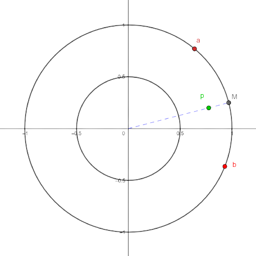

En esta sección veremos que el segundo producto simétrico de \(S^1\) es homeomorfo a una banda de Möbius, para lo cual hay que dar un homeomorfismo entre estos dos espacios de alguna manera.
Consideremos un elemento \(\{a,b\}\) de \(F_2(S^1)\) (recordemos que los elementos de éste conjunto son subconjuntos de \(S^1\) con uno o dos puntos). Notemos que \(\{a,b\}\) divide a \(S^1\) en dos arcos cuando \(a\neq b\)). Sea \(A\) el menor de estos arcos y sea \(M\) su punto medio (sobre \(S^1\)). Ahora, a partir de \(M\) avanzamos \(l(A)/2\pi\) unidades hacia el origen, donde \(l(A)\) es la longitud del arco \(A\), y al punto al que llegamos lo llamamos \(p = f(\{a,b\})\). Si \(a=b\) simplemente hacemos \(p=f(\{a\})=a\).
Con este procedimiento, podemos asignarle un punto \(p=f(\{a,b\})\) del anillo \(R=\{x\in \mathbb{R}^2:0.5\leq d(x,O)\leq 1\}\) a casi todos los elementos \(\{a,b\}\) de \(F_2(S^1)\). Decimos casi porque para las parejas de puntos antípodas (aquellas de la forma \(\{a,-a\}\)) esta asignación no está bien definida (no es una función), pues éstas parejas dividen a \(S^1\) en dos arcos de igual longitud, por lo que no está claro cuál es el menor, y al seguir el procedimiento con cada uno de ellos obtenemos dos puntos distintos (que resultan ser antípodas de la circunferencia \(C=\{x\in \mathbb{R}^2:d(x,O)=0.5\}\)).

Para arreglar esta situación haremos un pegado, identificaremos todos los puntos de la circunferencia \(C\) con sus antípodas, de este modo \(f\) será una función.

Antes de hacer el pegado (c) primero haremos dos cortes (a) y (b) que pegaremos de nuevo más adelante. Para las imágenes de abajo, en la de la izquierda se hacen los cortes y al separar por dichos cortes pasamos a la imagen de la derecha.

Ahora pegamos por (c).

Y lo que se obtiene de hacer los pegados que restan es una banda de Möbius.
Algo que es importante para probar que las curvas de Jordan inscriben rectángulos es que el conjunto de singletones de \(S^1\), es decir \(F_1(S^1)=\{\{q\}:q\in S^1\}\), corresponde al borde (frontera como variedad) de la banda de Möbius. Para convencernos de esto notemos que en la primera asignación (la que todavía no era una función) los singletones fueron enviados a \(S^1\). A partir de ahí, en cada paso de la construcción vamos rastreando este conjunto de puntos marcándolo en rojo, hasta que al final se ve que éste termina siendo el borde de la banda de Möbius.
Por último, si \(\gamma: S^1 \to \mathbb{R}^2\) es una curva de Jordan y \(J=\gamma(S^1)\), es fácil probar que \(F_2(J)\cong F_2(S^1)\), es decir que \(F_2(J)\) también es una banda de Möbius y el borde de esta banda también corresponde a \(F_1(J)\), esto último por un teorema de \(n\)-variedades que dice que la imagen del borde bajo un encaje es igual al borde de la imagen (bajo un encaje o un homomorfismo el borde va a dar al borde).